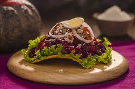

Tostada de maíz frita
Carne molida guisada (con tomate, cebolla, especias)
Escabeche de remolacha (remolacha rallada con vinagre, zanahoria y repollo)
Huevo duro en rodajas
Perejil o queso duro rallado
Salsa de tomate al gusto
Preparación rápida:
Fríe las tortillas hasta que queden tostadas.
Prepara la carne molida guisada.
Haz el escabeche con remolacha, zanahoria y repollo.
Arma la enchilada: sobre la tostada pon carne, luego escabeche, una rodaja de huevo, salsa y adorna con perejil o queso.
👉 ¡Y listo! Una enchilada chapina colorida, crujiente y deliciosa.
쯈uieres que te haga una versión paso a paso con cantidades exactas para que la prepares en casa?
